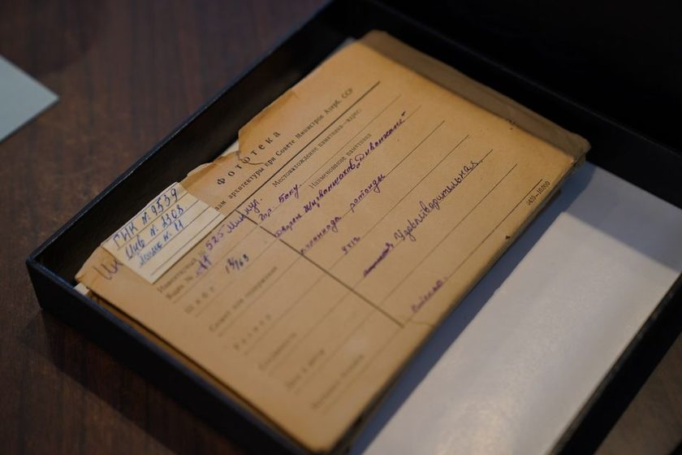

Method · Jan 14, 2026
Order of Arrival, Not Order by Topic
A household archive rarely fails because a document is missing. It fails because the shelf was reorganized by subject, and nobody remembers which subject won.
Somewhere in most houses there is a drawer, a bin, or a hanging-file box that used to have a system. Insurance here, warranties there, medical on the left, school papers on the right. It made sense the day it was built. A year or two later, nobody can say which of four plausible folders holds the roof estimate from the contractor who never called back, and the household has quietly split into two archives: the one on paper, and the one in the memory of whoever built the folders. That second archive doesn't survive the person who holds it. A move, a change in who's paying the bills, a death in the family, and the paper reverts to what it always was underneath the labels — an unordered pile someone has to re-sort from zero.
The Decision Nobody Remembers Making
Subject filing asks a question every time a paper enters the house: what is this, actually, for filing purposes? A car insurance renewal is arguably an insurance document, arguably a car document, and arguably just this year's mail. The person filing it in March decides one way. The person filing the near-identical renewal the following March, tired and holding a toddler, decides the other way, or starts a new folder called "Cars 2025" because the old one is already stuffed. Nothing about the paper changed. The decision changed, because it was never really about the paper — it was about a mood, and how full the folder looked that afternoon. A system that depends on the same judgment being made the same way, indefinitely, by whoever happens to be standing at the file cabinet, is not a system. It's a habit, and habits fray.
A two-minute check: open the folder you'd call "Insurance" and pull the oldest and newest item, side by side. If you can't tell which came first without reading the printed dates, the folder has stopped doing the one job a shelf needs to do.
What a Subject Folder Actually Promises
A subject folder makes an implicit promise: everything about this topic, together, in one place. For a while it keeps that promise well. Then a child ages out of the pediatrician and into a dentist whose paperwork doesn't fit the old "Kids — Medical" folder, so a new one starts next to it, and now two homes exist for one subject with no note saying which is current. Or a homeowner's policy renews under a new carrier, but the old carrier's claim history — the proof that matters if the same roof leaks again — stays behind in a folder labeled with a company nobody deals with anymore. The subject didn't fail on its own terms. Subjects aren't stable categories; they're labels for how someone was thinking about a paper on the day they filed it, and every day after is a slow drift from that accuracy that nobody schedules time to correct.
Series, Not Subjects
Archivists were sorting through this problem long before anyone owned a filing cabinet at home, and they mostly solved it by refusing the subject question entirely. A series, in archival terms, isn't a topic — it's the record of a recurring activity: every renewal notice a household has received, every statement from one bank account, every report card in order. A series doesn't ask what a document is about; it asks what generated it, and that question tends to hold steady for the document's whole life, because the activity behind it — renewing a policy, paying a mortgage, enrolling in a grade — doesn't get reinterpreted by whoever happens to be filing that afternoon. Arrange those series by the order things arrived, and the shelf ends up showing not just what happened, but the sequence it happened in — often the detail that settles a dispute with an insurer, a school, or a contractor, years later.
Subject is an opinion, revised every time someone stands at the file cabinet in a hurry. Arrival is a fact that never needs to be re-decided.
A Number Doesn't Argue With You
The mechanism that makes arrival order work is almost insultingly plain: a number. The next piece of paper that comes into the house takes the next number, written once, in the order it showed up, regardless of what it's about. There's no decision to make, no folder to choose between, no argument about whether the vet bill belongs under "Pets," "Medical," or this year's mail. It belongs under 214, because 214 was next. Writing a call number for a home archive can sound bureaucratic, right up until it's placed next to the alternative — re-litigating the subject question every time a paper shows up. A number doesn't care what mood the filer was in, doesn't drift, doesn't need renaming when a carrier changes, and doesn't require anyone to remember a scheme invented three years ago by someone who has since moved out. It just counts.
What Retrieval Actually Requires
The honest objection here is retrieval. Nobody keeps a warranty card to admire its number; they keep it to find it again in four years when the appliance breaks. Arrival order doesn't solve that by itself — it solves storage, and storage is only half the problem. The other half is a short, separate index: one line per item, noting the number, a rough description, and the date, kept wherever is convenient, a notebook, a spreadsheet, an index card box. That's where "subject" gets to live safely, as a searchable word, without corresponding to a physical location. Look up "washer," find the number, walk to the shelf, and count. Keeping something and finding something stop competing for the same folder once two separate tools handle them instead of one.
| Question | Subject-based shelf | Arrival-order shelf |
|---|---|---|
| Where does a new paper go? | Wherever it seems to fit best, decided fresh each time | The next open slot; no decision required |
| Who can refile it correctly later? | Only whoever remembers the original logic | Anyone; there is no logic to remember |
| What proves when it arrived? | Usually nothing written down | The position on the shelf itself |
| A category's meaning changes over time | The whole folder becomes ambiguous, gets split or merged incorrectly | Nothing changes; the index simply adds a note |
| How is a paper found later? | Guess the current label, open several folders | Look up the word in the index, walk to the number |
Three signs tend to show up together once a shelf has been organized by subject for too long:
- A folder tab with more than one name taped over the previous one.
- A document that could belong in three different places, and currently lives in none.
- Nobody but the one person who built the system can find anything in it.
Read also
3 related entries
What Actually Survives Seven Years in a Closet
Paper degrades on its own schedule, not the one printed on the folder. A look at what actually holds up over seven years in a closet, attic, or garage box.
Why the Manila Drawer Still Wins
Plastic bins solved one problem and created three others. A case for the unglamorous manila folder, and where it still beats anything newer.
The Year I Numbered Everything
A first-person log of one year spent assigning a call number to every document in a house — what took an afternoon, and what took four months.